Wave–maker¶
- Internal wavemaker theory
Internal wavemaker was implemented based on Wei and Kirby’s (1999) two–way internal wavemaker and Chawla and Kirby’s (2000) one–way internal wavemaker (under development). Here, we briefly summarize the formulations used in the wavemakers. Detailed theory can be found in Wei and Kirby (1999) and Chawla and Kirby (2000).
Wei and Kirby (1999) followed the approach of Larsen and Dancy (1983) who used an ad–hoc source mechanism where water mass is added and subtracted along a straight source/sink line inside the computing domain. This approach works well in a staggered–grid differencing scheme, where water is essentially being added to or drained from a single grid block. In applying this technique to the Boussinesq model on an unstaggered grid, however, Wei and Kirby found that use of a single source line accused high frequency noise, leading to blowup of the model. They then used a partially distributed mass source 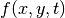
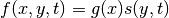
where 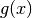 is a Gaussian shape function and 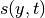 the input time series of the magnitude of source function with an assumption that the center of the source region is parallel to the y–axis. The functions and are defined as
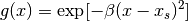
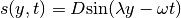
where  is the shape coefficient for the source function, and 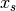 is the central location of the source in the
is the shape coefficient for the source function, and 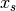 is the central location of the source in the  direction, for a source oriented parallel to the 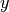 axis, as shown in Figure.
direction, for a source oriented parallel to the 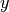 axis, as shown in Figure.  is the magnitude of the source function, 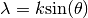 the wavenumber in the direction, and
is the magnitude of the source function, 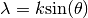 the wavenumber in the direction, and  is the linear wavenumber.
is the linear wavenumber.
For a monochromatic wave or a single wave component of a random wave train, the magnitude of source function can be determined by
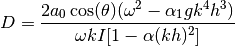
where 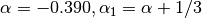, and  is the integral given by
is the integral given by

where 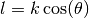 is the wavenumber in direction. In theory, the shape coefficient can be any number. The larger the value is, the narrower the source function becomes. The definition of the source function width  is not unique, and here we define to be the distance between two coordinates
is not unique, and here we define to be the distance between two coordinates  and 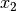 where the corresponding source function heights are equal to 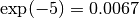 times the maximum height . Then and must satisfy the quadratic equation
and 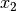 where the corresponding source function heights are equal to 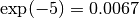 times the maximum height . Then and must satisfy the quadratic equation
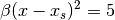
from which the width of source function is given by
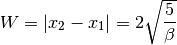
In the previous version of FUNWAVE (Kirby et al., 1998), it is suggested that equals about half of the wavelength for monochromatic wave. If 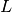 is the wavelength, the requirement of 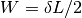 (where  is of order 1) results in
is of order 1) results in
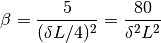
For random waves, the value of $beta$ is determined according to the peak frequency component and then used for all components in the wave train. FUNWAVE–TVD follows the criteria for determining though a narrow does not seem to cause any problem.
{kind=link}
For the irregular wavemaker, an extension was made to incorporate an alongshore periodicity into wave generation, in order to eliminate a boundary effect on wave simulations. The technique exactly follows the strategy in Chen et al. (2003), who adjusted the distribution of wave directions in each frequency bin to obtain alongshore periodicity. This approach is effective in modeling of breaking wave–induced nearshore circulation such as alongshore currents and rip currents.
- Regular wave generation
The generation of monochromatic wave using the internal wavemaker is straightforward. Following the formulations given in 3.7.1, the magnitude of source function is calculated by D equation shown above for given wave amplitude 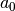, wave angle  , water depth 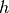 and wave period. The source function can be obtained using the Source function above.
, water depth 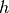 and wave period. The source function can be obtained using the Source function above.
- Irregular wave generation using directional spectral data
Irregular waves can be generated by integrating wave components split by frequency and direction and with random phases Each wave component contains wave amplitude converted from wave energy, wave angle and wave period. The source function for each component can be obtained using the source function.
- Irregular wave generation using analytical spectrum function
The input for the wavemaker can be wave bulk parameters or directional spectral data. TMA shallow–water spectrum, JONSWAP spectrum and a wrapped–normal directional–spreading function are used to simulate a directional sea state. The combined spectrum function can be expressed as
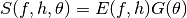
 is the energy density distribution as follows
is the energy density distribution as follows
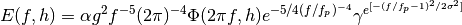
in which 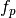 is the peak frequency.  presents a frequency spreading parameter, and
presents a frequency spreading parameter, and  and
and  are coefficients which may be found in Bouws et al. (1985). $alpha$ is obtained using the input 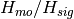,
are coefficients which may be found in Bouws et al. (1985). $alpha$ is obtained using the input 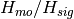,
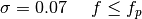
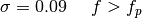
 = 1.0 for the JONSWAP spectrum. For TMA, may be expressed as
= 1.0 for the JONSWAP spectrum. For TMA, may be expressed as
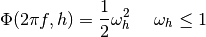
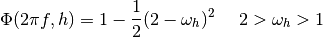
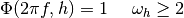
where
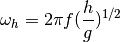
here 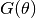 is the wrapped normal directional spreading function written as
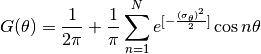
where 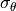 denotes circular deviation of the wrapped normal spreading function. To avoid the computational underflow, 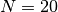 in the model.
In the spectral wavemaker, the directional spectrum is first divided into 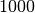 frequency components and then reconstructed into a user–specified number of components with the equal energy. The directional components s evenly split in each frequency. The source function technique (Wei, et al., 1999) is then used for each component and the final surface elevation function can be written as
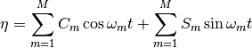
where
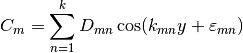
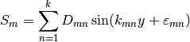
in which y–axis is oriented along the main axis of the wave maker. 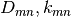 and 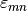 are respectively the amplitude, wave number in the y direction and phase of a component. The phase can be random.
The model also provides an option for 1–D spectral wave generation (uni–directional).